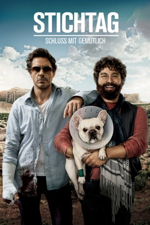
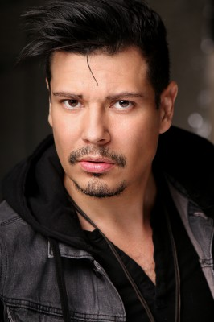
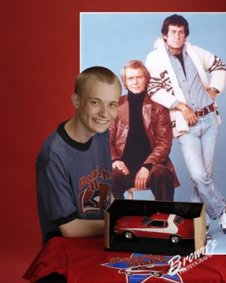

#1229 Stichtag - Schluss mit gemütlich
Alternativ: Due Date
 
 IMDB-Wertung: 6.6 / 10
IMDB-Wertung: 6.6 / 10  Metascore: 51
Metascore: 51 
Peter Highman möchte zur Niederkunft seines ersten Kindes rechtzeitig bei seiner Frau Christine zu sein. Sehr zu seinem Leidwesen läuft ihm auf dem Weg zum Flughafen der angehende Schauspieler Ethan Tremblay über den Weg, was prompt dazu führt, dass Peter den Flieger verpasst. Als Zweckgemeinschaft sehr zum Unwillen Peters vereint machen sich die beiden mitsamt Ethans Französischer Bulldogge auf einen Roadtrip von Atlanta nach Los Angeles, damit Peter rechtzeitig zu seinem Stichtag in der Heimat ist. Unterwegs machen sie dabei nicht nur Bekanntschaft mit allerlei merkwürdigen Menschen, auch lernt Peter Ethan besser kennen als ihm lieb ist, denn Ethan zieht mit seinem Hang fürs Theatralische Peters Nerven noch weiter strapazierende Situationen förmlich an.
Jahr: 2010
Dauer: 95 Minuten
FSK: 12
Land: USA Studio: Warner Bros.Tonspuren: DD5.1 - ,
Untertitel: Deutsch,
Auflösung: 1080p (1920x800) Größe: 9533 MB
Genre: Abenteuer, Komödie, Drama
Regisseur: Todd Phillips
Drehbuch: Alan R. Cohen, Alan Freedland, Adam Sztykiel, Todd Phillips, Alan R. Cohen
Soundtrack: Christophe Beck
Darsteller:
 Robert Downey Jr. als Peter Highman
Robert Downey Jr. als Peter Highman Zach Galifianakis als Ethan Tremblay
Zach Galifianakis als Ethan Tremblay Michelle Monaghan als Sarah Highman
Michelle Monaghan als Sarah Highman Jamie Foxx als Darryl
Jamie Foxx als Darryl Juliette Lewis als Heidi
Juliette Lewis als Heidi Danny McBride als Lonnie
Danny McBride als Lonnie RZA als Airport Screener
RZA als Airport Screener Matt Walsh als TSA Agent
Matt Walsh als TSA Agent- Brody Stevens als Limo Driver
 Todd Phillips als Barry
Todd Phillips als Barry- Bobby Tisdale als Carl
 Sharon Conley als Airport X-Ray
Sharon Conley als Airport X-Ray- Nathalie Fay als Flight Attendant
- Emily Wagner als Flight Attendent
 Steven M. Gagnon als Air Marshall
Steven M. Gagnon als Air Marshall- Paul Renteria als Border Guard
 Marco Rodríguez als Federali Agent
Marco Rodríguez als Federali Agent- Mimi Kennedy als Sarah's Mom
- Tymberlee Hill als New Mother
 Keegan-Michael Key als New Father
Keegan-Michael Key als New Father Aaron Lustig als Dr. Greene
Aaron Lustig als Dr. Greene Jon Cryer als Alan Harper
Jon Cryer als Alan Harper Charlie Sheen als Charlie Harper
Charlie Sheen als Charlie Harper-  Cesar Aguirre als Airline Pedestrian , uncredited
-  Jeremy Ambler als TSA Agent , uncredited
- James Belyeu als Airport Passenger , uncredited
- Tina Borek als Driver , uncredited
- Shannon Brinson als Airport Passenger , uncredited
- Howard Fine als Himself , uncredited
- Tony Folden als Construction Worker , uncredited
- Gilbert Galon als Airport Pedestrian , uncredited
- Joseph Harold als Private Johnson , uncredited
- Chris Labadie als Audience Member , uncredited
- Erica LaRose als Hitchhiker , uncredited
- Meghan McCarthy als Herself , uncredited
- Sarah Reagin als Airport Security Agent , uncredited
- Jakob Ulrich als Patrick
- Naiia Ulrich als Alex
- Charley Barksdale als Flight Passenger , uncredited
- Peter Choi als Orderly , uncredited
- Frances Cobb als Airport Traveller , uncredited
- Kennith Edwards als Business Traveler , uncredited
- Amy L. Eller als TSA Agent , uncredited
- Cyrah Hawkins als Orderly , uncredited
- Barry Hopkins als Airport Patron , uncredited
- Grant Blanks Kristol als Airport Car Rental Customer , uncredited
- Joseph O'Brien als Airport Pedestrian , uncredited
- Scott M. Yaffee als Construction worker , uncredited
Datei: X:\2010(N-Z)\Stichtag - Schluss mit gemütlich (2010, FSK12, 1920x800).mkv seit 10.06.2015
Festplatte: HD 2010(G-Z)-2011(A-F)
 Es gibt insgesamt 115 Filme in der Gruppe '2010(N-Z)'
Es gibt insgesamt 115 Filme in der Gruppe '2010(N-Z)'